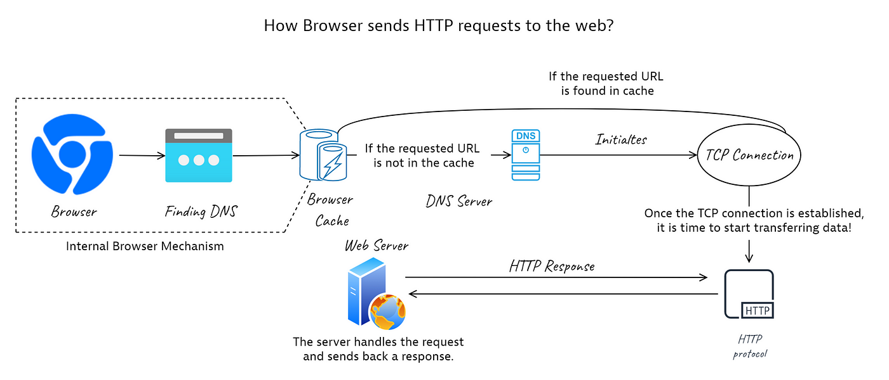

How HTTP Works
HTTP operates as a stateless, request-response protocol. The client—usually a web browser—sends a request to a server using a URL, and the server returns a response. While older versions use TCP, HTTP/3 runs over the QUIC protocol, which uses UDP for faster and more reliable communication.
An HTTP request includes a request line (method, URI, and HTTP version), headers, and an optional body. Common methods include:
- GET: Retrieve data
- POST: Submit data
- PUT: Update resources
- DELETE: Remove resources
Server responses contain a status line, headers, and a message body. Status codes are grouped into five classes:
- 1xx – Informational
- 2xx – Success
- 3xx – Redirection
- 4xx – Client Error
- 5xx – Server Error
Status codes not only inform clients of the success or failure of requests but also guide automated behaviors. For example, 301 Moved Permanently tells browsers and search engines to update URLs, while 429 Too Many Requests helps servers manage traffic load through rate limiting.
HTTP in the Modern Web
HTTP supports both static and dynamic web content. Static content includes pre-written HTML files, while dynamic content is generated in real-time using server-side logic.
HTTP also powers most web APIs. RESTful services use standard HTTP methods to interact with resources. This architecture has become the backbone of modern app development.
Secure HTTP (HTTPS) uses Transport Layer Security (TLS) to encrypt data and ensure privacy and authenticity. HTTPS is now standard for any site handling sensitive data.
The rise of Single Page Applications (SPAs) and asynchronous JavaScript calls (AJAX/fetch API) has changed how HTTP is used — with many small API calls replacing traditional full-page reloads. This paradigm demands efficient HTTP usage and faster protocols to reduce overhead.
Tools and Implementations
Developers use tools like Postman to test HTTP requests, while browser developer tools (F12) help monitor live HTTP activity. CLI tools such as curl and wget are widely used for scripting HTTP requests.
For instance, Postman enables developers to build, test, and document RESTful APIs easily, while curl is invaluable for scripting and troubleshooting network requests. Modern browsers provide detailed HTTP inspectors showing request headers, responses, timing, and cookies, empowering developers to optimize performance and security.
Web servers like Apache, Nginx, and Microsoft IIS serve content using HTTP. On the client side, browsers like Chrome, Firefox, Edge, and Safari support HTTP/1.1, HTTP/2, and increasingly HTTP/3.
Challenges and Future Directions
Although HTTP/2 and HTTP/3 offer performance improvements, challenges such as network congestion and real-time communication needs remain. HTTP/3 adoption is still growing, and compatibility with legacy systems can be inconsistent.
HTTP/3's reliance on UDP brings benefits but also new challenges, such as firewall traversal and ensuring reliability over an inherently connectionless protocol. Meanwhile, emerging protocols like WebTransport and WebSockets complement HTTP for scenarios needing bidirectional, low-latency communication such as gaming and live streaming.
Looking ahead, HTTP will continue to evolve alongside technologies like IoT, real-time communication, and AI-based systems. Emerging protocols such as WebTransport aim to complement HTTP in scenarios requiring ultra-low latency.